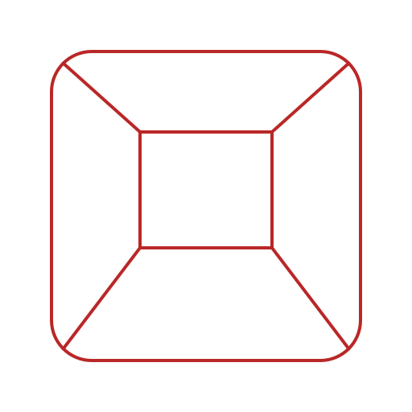

A clap in a stairwell, a voice memo in a kitchen, a tap on a glass: each one carries the space it was made in. ROOM captures that space: its tone, the notes it rings at, and how it lets go of every frequency. Then it hands them back to you, so anything you play can live inside it.
Drop any audio on ROOM, or record straight into it, and a few seconds later you're playing through that place. Use its colour and its notes on their own, add its decay, make it bigger or longer. Push it past 100% and the room's own notes become an instrument. It works anywhere you'd reach for a reverb, and in plenty of places you wouldn't.
[Placeholder: your story. Where the idea came from (a space you loved the sound of, a phone recording that had more vibe than any plugin), what you couldn't find in other plugins, and what you wanted ROOM to feel like.]
[Placeholder: who ROOM is for, and one or two ways you use it on your own records.]
Any sound in, the place it was made in out: a clap, a voice memo, a tap on a glass.
The room's colour, the notes it rings at, and how each frequency fades. Use any of them, with or without a tail, or push past 100% and play the room's notes.
49 rooms and 46 studios built in, plus your own packs.
The colour a space puts on everything in it: a tiled bathroom's bite, a car's boxiness, a bottle's narrow hum. ROOM measures it across the spectrum, against a neutral reference, so it hears what the space added, not the source.
Every space rings at certain pitches, set by its size, shape and material. ROOM finds the notes that stand out most, with how strong and how narrow each one is. These are the room's own notes.
How the space lets go of each frequency. ROOM measures how long 16 bands, lows to highs, take to die away: concrete holds its highs, carpet kills them, halls hang on to their lows.
ROOM keeps those measurements, not the audio, and rebuilds the place from them: a tone match, tuned resonators on the room's notes, and a fresh stereo decay at the room's own rates. So a two-second phone clip can become a five-second space, and you can make it bigger, darker or longer.
Just the space: what ROOM measured from a sound. Load a room and your knobs stay where they are, so you can try the same settings in a hall, a car or a bottle.
The whole sound: a room plus every knob, the noise, the Advanced settings and both LFOs. This is what the preset name at the top loads.
1Header: menu, studios, save, Advanced, Randomize, Wet, Out and power.
2Stage: drop or record a sound, and your rooms float around it.
3Controls: Intensity, Smooth and Glitch; Tone and Space; Tail and Size.
4Noise and Rate: a texture under the room, and sample rate down to lo-fi.
5Advanced: pre-delay, damping, width, ducking, freeze, tape, auto eq and two LFOs.
New preset, reset all knobs, tips on or off, the tour, check for updates, the website, get support, about, and deactivate this computer. A red dot means an update is out.
The loaded studio (a * means you've changed it). Click the name to browse; the arrows step through. The disk saves, the heart makes it a favourite.
Advanced opens the panel on the right (page 07). Randomize: left-click to randomize, right-click to choose what it may change.
Wet is the mix of dry and room; Out the output level. Power bypasses ROOM with a smooth crossfade, in time with the dry signal.
Drag any audio file onto the stage. Hits (a clap, a snare, a door) give the clearest rooms; steady sounds (hiss, room tone) work too.
Press record and play into the track, up to 30 seconds. Stop and ROOM builds the room.
Your quick rooms orbit the box. Click one to load it.
Save room keeps the room you just made in your library. Clear empties the stage.
Click the box to see the room's numbers: its decay in every band, how much is late energy, and the notes that ring. All rooms opens the room library.
How much of the room you hear, from 0 to 200%. Up to 100% it's the room as captured. Past that, its notes take over (below).
The whole sound as a mic across the room hears it: softer hits, a rounder top, a little air and early reflections.
Glitch grabs short slices of the room and stutters them. Amount sets how often and how many repeats. Sync locks the slices to your song's grid.
Tone is the room's colour and its ringing notes, with no tail. Space is its decay. Use either, or both.
Sync moves Tone and Space opposite each other, so one knob slides between colour and space. Auto sets both from what ROOM heard in the sound.
Tail is how long the room rings. Size makes it smaller or bigger than the one you recorded; 50% is the room as it was.
Its tone, notes and decay, from a hint to all of it.
An octave-up shimmer that feeds back on itself, with reversed swells.
A measured amount of digital breakup.
The room's own notes, their fifths and octaves, a choir and warm saturation. Every room blooms differently.
Glitch gets busier as Intensity rises, so the two work as a pair.
Turn Space all the way down and Tone up. There's no tail at all, yet your sound is now in the room: its colour, and its notes ringing along with yours. That's the part a reverb can't give you.
Noise lays one of 54 textures under the room, from vinyl to waves to a bus. Rate takes the sample rate down, from clean 44.1 kHz to dusty lo-fi.
Vinyl, tape hiss, air, room tone
Waves, rain, birds, streams
Rooms, crowds, a bus, the night
Tape, crackle, hum, radio
Drones, voices, whistles
Click the screen to pick from the menu, grouped as above, or step with the arrows. Every texture is a seamless loop: no seam, no click.
How loud the texture is.
At 0 the noise plays all the time. Turn it up and the noise follows your playing, rising with the sound and falling away in the gaps.
Silences the noise when nothing is playing: the transport is stopped and no audio is coming in. Switch it off to keep the hiss going.
Full is 44.1 kHz, untouched. Turn it towards low and the top end closes down like an old sampler: smooth and clean, no harsh crunch.
D the dry sound, R the room (tone and space), N the noise. All three are on by default; switch one off to keep it full rate.
A gap before the room starts, up to 500 ms, so the dry hit stays clear.
Makes the highs die faster (darker) or slower (brighter) than the room.
From mono to extra wide.
Turns the room down while you play and lets it bloom in the gaps. Release sets how fast it comes back.
Holds the tail forever. Play over it.
Closes in the lows and highs, like an old machine.
Tames harsh ringing in the room between 2 and 10 kHz, only where it builds up.
Seven shapes, free or synced, with retrigger. Drag an LFO's handle onto any knob; up to 8 targets each.
Right-click Randomize to tick what it may change. Intensity sets how far it goes:
Basic stays musical: each knob lands near the middle of its sweet spot, and switches rarely flip. Moderate uses the whole sweet spot. Extreme uses every knob's full range and flips every switch it's allowed to.
Your ticks and intensity are saved with the project.
Click the studio name (or All rooms on the stage) to open a library. Click an entry to hear it and keep browsing; arrow keys step through.
Closets, cars, booths
Live rooms, garages, apartments
Halls, chapels, cathedrals
Bottles, pipes, boxes, bowls
Room tone, rain, vinyl, dust
Outdoor, plate, cassette, strange
Six slots at the top of the room library. The rooms in them are the cards on the stage.
Heart anything to find it in Favourites. Search covers names, types, styles and what it's made for; Filters narrow it down.
Save into a pack, or make one with + new pack.
Import and export rooms, studios and whole packs. A room file is tiny, so they're easy to pass around.
Rename, move, show in folder, export or delete.

support@prodbyeville.com
Downloads and updates: update.prodbyeville.com/room
prodbyeville.com